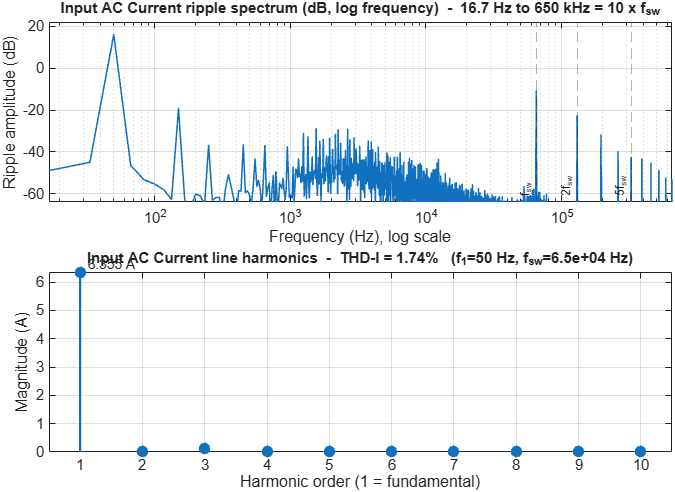

AC harmonics and THD of converter from existing simulation log
harmonicData = estimateConverterHarmonics(simulationLog,Converter=converterKey,FundamentalHz=f)harmonicData = estimateConverterHarmonics(___,Name=Value)harmonicData = estimateConverterHarmonics(simulationLog,Converter=converterKey,FundamentalHz=f) returns the harmonic spectrum and the total harmonic distortion (THD) of the AC signals of the converter converterKey in the logged data simulationLog, at the line frequency f, without simulating the model.
harmonicData = estimateConverterHarmonics(___,Name=Value) specifies options using one or more name-value arguments.
Plot the waveforms of the boost PFC converter, then analyze the harmonics of the same run.
[ivData,simulationLog] = getConverterWaveforms("BoostPFCConverter", ...
Converter="BoostPFC",Vref=simscape.Value(400,"V"),Pload=simscape.Value(1000,"W"), ...
SimTime=simscape.Value(150,"ms"),FrequencyHz=50,MaxStep=1/(2*10*65e3));
harmonicData = estimateConverterHarmonics(simulationLog, ...
Converter="BoostPFC",FundamentalHz=50,SwitchingHz=65e3);
harmonicData.signals(1).THD
The example produces this figure.

simulationLog - Logged simulation dataLogged data of a converter run, specified as a Simulink®.SimulationOutput object or a Simulink.SimulationData.Dataset object. A Simulink.SimulationOutput object requires the Converter argument.
Converter - Converter keyConverter registry key, specified as a character vector or string scalar, for example "BoostPFC". Without Signal, this argument is required. Default: ""
FundamentalHz - Fundamental frequencyLine frequency of the analyzed signals, in Hz, specified as a positive scalar. This argument is required.
SwitchingHz - Switching frequencySwitching frequency of the converter, in Hz, specified as a positive scalar. The ripple spectrum requires this value. Default: []
Signal - Signal nameName of a logged signal to analyze instead of the AC signals of the converter, specified as a string scalar. Default: string.empty
Quantity - Signal quantityPhysical quantity of Signal, specified as "current" or "voltage". When empty, a name that starts with V is a voltage and any other name is a current. Default: ""
MaxHarmonic - Highest plotted harmonicHighest harmonic order in the harmonic plot and table, specified as a positive integer. Default: 10
THDMaxHarmonic - Highest THD harmonicHighest harmonic order summed into the total harmonic distortion (THD), specified as a positive integer. Default: 10
RippleSpectrum - Ripple spectrum plotOption to plot the switching-ripple spectrum, specified as a numeric or logical 1 (true) or 0 (false). Default: true
RippleSpanMultiple - Ripple spectrum spanHighest frequency of the ripple spectrum, as a multiple of SwitchingHz, specified as a positive scalar. Default: 10
ShowHarmonicTable - Harmonic table displayOption to print the magnitude of each harmonic in the Command Window, specified as a numeric or logical 1 (true) or 0 (false). Default: false
ShowStandardTable - Standard THD table displayOption to print the THD by standard, IEEE 519 and IEC 61000, in the Command Window, specified as a numeric or logical 1 (true) or 0 (false). Default: true
CyclesToAnalyze - Number of analyzed cyclesExact number of whole fundamental cycles to analyze, specified as a positive integer. When empty, the function analyzes every whole cycle in the window. Default: []
TimeWindow - Analysis time windowStart and end time of the analyzed interval, in seconds, specified as a two-element vector. When set, this argument overrides WindowFraction. Default: []
WindowFraction - Analysis window fractionStart and end of the analyzed interval, as fractions of the log, specified as a two-element vector of values from 0 to 1. Default: [0.6 1]
MinCycles - Minimum number of cyclesNumber of whole fundamental cycles below which the function issues a warning, specified as a positive scalar. Default: 3
ShowPlots - Spectrum plotsOption to plot the spectra, specified as a numeric or logical 1 (true) or 0 (false). Default: true
FigureName - Figure nameName of the spectrum figure, specified as a character vector or string scalar. When empty, the name is the converter key followed by Harmonics. Default: ""
Interactions - Axes interactionsOption to keep the default axes interactions and axes toolbar on the figures, specified as a numeric or logical 1 (true) or 0 (false). Default: false
harmonicData - Harmonic analysis resultsHarmonic analysis results, returned as a structure. The signals field holds one element per analyzed signal, with the harmonic orders, the magnitude of each harmonic and its percentage of the fundamental, the THD, the harmonic table, the THD-by-standard table, the ripple spectrum, the analysis window and the number of analyzed cycles. The structure also holds the sampleTime, reliableHarmonic, fundamentalHz, switchingHz, analysisWindow, cyclesAnalyzed and skippedReason fields. When a license that the analysis requires is unavailable, the function prints the reason and returns a structure with no signals, with skippedReason naming the missing license.
RippleSpanMultiple*SwitchingHz). A coarser log clips the ripple spectrum with a warning.simulateConverterHarmonics | harmonicsFromSignalLog | getConverterWaveforms | Power Converter Utilities